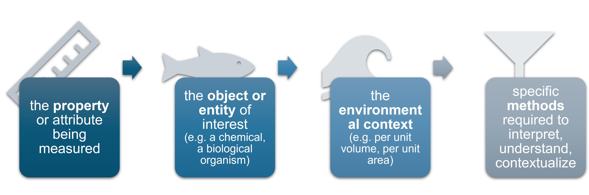

Publishing eDNA Data in OBIS
From sequences to a global open biodiversity record
2026-07-02
Agenda
| Time (min) | |
|---|---|
| 00:00 | Welcome and housekeeping |
| 00:10 | Introduction to DNA-derived data |
| 00:40 | Dataset exercise introduction |
| 00:45 | Exercise: samples.xlsx (Event & eMoF table) |
| 00:55 | Exercise: seqtab.txt (Occurrence) |
| 01:05 | Exercise: taxonomy.txt (Occurrence) |
| 01:10 | Exercise: sequences (DNA-derived data) |
| 01:15 | Exercise: methods (DNA-derived data) |
| 01:30 | Q & A |
eDNA data in OBIS
{kind=link}
- OBIS currently holds 128 datasets with eDNA-derived occurrences, including 44,5 million records
- About 2 million distinct sequences
- That is 2% of all datasets, but 25% of all occurrence records in OBIS
What is eDNA?
Environmental DNA (eDNA)
“Any DNA collected from an environmental sample without first isolating targeted organisms”
— Taberlet 2012
- Environments: water, soil, sediment, air
- Free DNA, particle-bound DNA, organelles, cells, tissue
- From viruses to fish, crustaceans, and plants
🌊🌱🍃
Most common eDNA data types you may encounter:
Environmental DNA Metabarcoding
Quantitative PCR (PCR)
Five data categories
Which one fits your data?
| # | Category | Example |
|---|---|---|
| 1 | DNA-derived occurrences | Metabarcoding (ASVs/OTUs assigned to taxa) |
| 2 | Enriched occurrences | Voucher specimen + barcoded |
| 3 | Targeted species detection | qPCR / ddPCR assays |
| 4 | Name references | Sequence in GenBank only |
| 5 | Metadata only | Dataset without sequences |
🔎 Use the GBIF decision tree to confirm your category
What is Environmental DNA Metabarcoding?
Barcoding + Meta
Barcoding = species ID via a genetic marker sequence
Meta = all together (all organisms at once)
Choosing the right barcode
- Defines which organisms can be identified
- Trade-off: broad groups vs species-level precision
- Common markers: 12S, 16S, 18S, COI, ITS
The eDNA Metabarcoding Workflow

Figure adapted from NatureMetrics and Gill et al. 2016 · Emilie Boulanger
Key Metadata: eDNA Metabarcoding
From field collection to taxonomy — what to capture at each step
⛵ Field Sampling
- Date, Coordinates, Environmental measurements
🧪 Biomarker / PCR
- Primer sequence, primer reference, target gene, PCR conditions, length of product, concentration,
🧬 DNA Extraction
- Concentration, Extraction method, Extracted amount
💻 Sequences & Taxonomy
- Sequencing platform, Library layout, Public repositry ID (NCBI, ENA)
- Taxonomy, annotation confidence and reference, Pipeline, Reference library
Key Metadata: Quantitative PCR (qPCR)
Targeted species detection — additional fields vs metabarcoding · Category 3
⛵ Field Sampling
- Date, Coordinates, Environmental measurements
🧪 PCR Protocol
- PCR conditions
🧬 DNA Extraction
- Concentration, Extraction method, Extracted amount
🎯 Target & Quantity
- Target gene region, primers
- Copy number, concentaration, LOD, Cq, baseline
Category 3 — Targeted species detection · basisOfRecord = MaterialSample
Why publish eDNA data?
eDNA captures what other methods miss
- Cryptic and rare marine taxa
- Non-invasive, scalable sampling
- Community-level biodiversity signals
Shared eDNA data is powerful data
- Data contributes to global analyses
- Data has long-term value
- Your sequences become findable via OBIS sequence search tools
| Benefit | Why it matters |
|---|---|
| Open DOI | Citable in publications |
| Long-term archive | FAIR data |
| Global reach | OBIS + GBIF |
| Sequence search | Reuse & reanalysis |
What is special about eDNA data?
Enormous potential…
- Expands access to biodiversity data at scale
- Captures environmental, specimen, and bulk-sample DNA
- Raw sequences already widely shared in NCBI
…but NCBI alone is not enough
- Raw sequences cannot be searched by species in time and space
- No link to spatial coordinates or sampling date
- Cannot support distribution maps, trend analyses, or MPA assessments
What is special about eDNA data?
Special considerations
⚗️ Derived information — not a direct observation; extensive lab and bioinformatic processing
📚 Relies on reference databases — results depend on database completeness
❓ Large fraction of unknown sequences — no match in any database
📋 The DwC DNA Extension records how work was done, enabling future re-analysis
eDNA data standards
Two major eDNA data standards exist
- MiXS
(Minimum Information about any (x) Sequence) — for raw sequences in NCBI
- Darwin Core (DwC)
Community vocabulary for biodiversity data — species, location, date, basis of record
OBIS + GBIF + ALA accept genetic data linked to spatial coordinates and time
🔜Developing landscape
- Rapidly changing field
- For OBIS future directions include the DWC-DP and FAIReDNA terms
Darwin Core + DNA Derived Data Extension
- Darwin Core: shared vocabulary for biodiversity data
- DNA Extension: adds MIxS terms for sequences, primers, methods
- Developed jointly by GBIF, OBIS, and the genomics community

meta.xml ← links all tables
eml.xml ← metadata (who, what, where, when, how)
occurrence.csv ← the occurrence records
dna_derived.csv ← the DNA extension
The DNA publishing guide
Publishing DNA-derived data through biodiversity data platforms


From raw outputs → long format
DNA data is more complex than a lat/lon + species name
Your typical metabarcoding outputs:
| File | Content |
|---|---|
| OTU/ASV table | Sequences × Samples (read counts) |
| Taxonomy table | Sequence [ID] → taxon assignment |
| Sample metadata | Location, date, method |
| FASTA file | Actual DNA sequences |
The transformation:
One row = one unique sequence in one sample = one occurrence record
Example transformation

Key fields to include: Occurrence core
Occurrence core table (mandatory fields)
occurrenceID— unique, stable IDscientificName— WoRMSbasisOfRecord= “MaterialSample”
eventDate,decimalLatitude,decimalLongitude
occurrenceStatus= “present”
Occurrence core table (strongly recommended fields)
scientificNameID(WoRMS AphiaID)
organismQuantity(read count of sequence)
associatedSequences(link to e.g. GenBank or ENA accession)organismQuantityType= “DNA sequence reads”sampleSizeValue(total read count in sample)
sampleSizeUnit= “DNA sequence reads”samplingProtocol- (link to your SOP)
WoRMS Taxon Matching
Options for taxon matching:
- WoRMS Taxon Match Tool
- Programmatically:

No WoRMS match?
Use highest-rank taxon with a match (e.g. family or order). Keep the sequence — it can be re-identified later as reference databases improve.
Still no match?
Unknown sequences recorded as: scientificName = “Biota incertae sedis” scientificNameID = urn:lsid:marinespecies.org:taxname:12
Key fields to include: DNA Extension
DNA Extension (example key fields)
DNA_sequence— ASV/OTU sequencetarget_gene— e.g. “COI”, “18S rRNA”pcr_primer_name_forward— and reverseseq_meth— e.g. “Illumina MiSeq”otu_class_appr— e.g. “DADA2 v1.18”otu_db— reference databasesop— link to your protocol
 https://manual.obis.org/dna_data.html#quick-start-guide
https://manual.obis.org/dna_data.html#quick-start-guide
Table structure options
Option A — Occurrence Core
occurrence.csv
└── dna_derived.csv (linked via occurrenceID)
└── emof.csv (linked via occurrenceID)Option B — Event Core (recommended for eDNA)
event.csv
└── occurrence.csv (linked via eventID)
└── dna_derived.csv (linked via occurrenceID)
└── emof.csv (linked via eventID or occurrenceID)Why Event Core? Sample-level metadata (location, date, method) is recorded once per sampling event rather than repeated in every row.
Dataset Structure: Three Linked Tables
Event Core
eventIDeventDatedecimalLatitudedecimalLongitudeenv_mediumsamplingProtocol
→ the where, when & how of collection
Occurrence Extension
occurrenceIDeventIDscientificNametaxonID(WoRMS)basisOfRecordoccurrenceStatus
→ what organism was detected
DNA Derived Data Ext.
occurrenceIDDNA_sequencetarget_genepcr_primer_forwardpcr_primer_reverseseq_meth
→ the molecular context
Tables linked by eventID and occurrenceID
Optional 4th table: eMoF for measurements and facts
Example usage of Event core structure
- Why Event Core? Sample-level metadata (location, date, method) is recorded once per sampling event rather than repeated in every row.

eMoF extension
- Table to record all types of measurements (abiotic, biotic, environmental, sampling…)
- Measurements recorded in long format
measurementType,measurementValue,measurementUnit
- Linking sampling info to
eventIDs decreases duplication - Use controlled vocabulary whenever possible!
| eventID | occurrenceID | measurementType | measurementValue | measurementUnit | |
|---|---|---|---|---|---|
| YEARsite1samp1 | temperature | 25 | C |
| measurementTypeID | measurementUnitID | |
|---|---|---|
| http://vocab.nerc.ac.uk/collection/P01/current/TEMPPR01/ | http://vocab.nerc.ac.uk/collection/P06/current/UPAA/ |
Controlled Vocabulary
Identifiers for each eMoF column
- measurementUnitID
- measurementValueID
- non-numeric values
- measurementTypeID
→ Facilitates data understanding
→ Enables data aggregation
→ Decreases misuse potential
What should vocabulary terms capture?

OBIS recommends using NERC vocabulary terms
Tools to Help You
GBIF Metabarcoding Data Toolkit
Automates DwC mapping from bioinformatic outputs
gbif.org/tools/mdt
robis (R package)
Query OBIS; retrieve DNA records with unnest_extension()
github.com/iobis/robis
obistools (R package)
Validation, QC, WoRMS matching, archive structure checks
github.com/iobis/obistools
OBIS Sequence Search
BLAST-search sequences already in OBIS (prototype)
sequence.obis.org
The Metabarcoding Data Toolkit (MDT)
A newer tool to simplify the workflow
- Developed by GBIF specifically for metabarcoding data
- Accepts common pipeline outputs (QIIME2, DADA2, etc.)
- Handles the wide-to-long transformation
- Generates Darwin Core Archive + DNA Extension automatically
- Integrates with IPT publishing
🔗 Available at: mdt.gbif.org
Note
Still under active development — check the GBIF documentation for the latest capabilities. Currently not possible to use the event core structure
OBIS DNA Data Management Platform
🔧 OBIS is developing a data management platform for DNA data including:
- Bioinformatics
- QC
- Validation
- Publication to OBIS pipeline
To be offered to OBIS nodes to support local eDNA projects!
🚧
eDNA is Already in OBIS — and Being Used
Real eDNA datasets already published:
- eDNA surveys from Monterey Bay, California
- 16S rRNA metabarcoding of pico-to-mesoplankton
- Fish eDNA surveys across multiple ocean basins
How to find eDNA data in OBIS:
Species Distribution Modeling
Biodiversity Assessments
MPA Baseline Studies
Global Meta-analyses
Resources and community
| Resource | Link |
|---|---|
| OBIS Manual (DNA chapter) | manual.obis.org/dna_data.html |
| OBIS DNA training slides (this presentation!) | github.com/iobis/obis_edna_slides_node_training |
| GBIF DNA publishing guide | doi.org/10.35035/DOC-VF1A-NR22 |
| OBON 2024 DNA training | github.com/iobis/obon-2024-dna-training |
| IOOS Bio Mobilization Workshop | ioos.github.io/bio_mobilization_workshop |
| GBIF-NA DNA Publishing Workshop | sunray1.github.io/2025-05-09-GBIF-NA-DNAPublishing |
| OBIS helpdesk | helpdesk@obis.org |
Summary
Three steps to publish your eDNA data:
Format — Darwin Core + DNA Derived Data Extension
Long format: one row = one sequence per sampleDocument — Complete EML metadata
Primers, methods, bioinformatics pipeline, licensePublish — Through your OBIS node IPT
Get a DOI. Be cited. Join the global record.
Start here → manual.obis.org/dna_data.html
Why it matters
eDNA captures biodiversity no other method can.
Publishing it in OBIS makes it
reusable, citable, and permanent.
© 2026 License: CC BY-NC 4.0